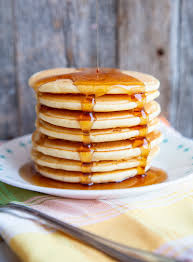

My favorite food
Pancakes
Try this wonderful recipe for Pancakes

Ingredient
- 1 1/2 cups all-purpose flour
- 3 1/2 teaspoons baking powder
- 1 teaspoon salt
- 1 tablespoon white sugar
- 1 1/4 cups milk
- 1 egg
- 3 tablespoons butter, melted
Direction
- In a large bowl, sift together the flour, baking powder, salt and sugar. Make a well in the center and pour in the milk, egg and melted butter; mix until smooth.
- Heat a lightly oiled griddle or frying pan over medium high heat. Pour or scoop the batter onto the griddle, using approximately 1/4 cup for each pancake. Brown on both sides and serve hot.
I recommend to add fruit topings like blueberries and banana!
Check the link for more advanced recipes here